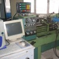

|
|
| Rapor - Makale
> CNC Tezgahlar: |
Klasik bir torna tezgahý için bilgisayar kontrollu profil tornalama sistemi geliþtirilmesi:
Ömer Keleþ, Yusuf Usta, Y. Yücel Yeþilbað, Gazi Üniv. Makine Müh. Böl., Ankara
Yücel Ercan, TOBB Ekonomi ve Teknoloji Üniv. Makine Müh. Böl., Ankara
Bu çalýþmanýn amacý, bir konvansiyonel torna tezgahýnda istenilen karmaþýk profili iþleyebilmek için hidrolik tahrikli ve bilgisayar kontrollu bir düzenek ve bilgisayar programý geliþtirmektir... |
 |
Bir araç iç kapý kolunun ürün geliþtirme uygulamasý:
Mümin Tutar, Aralýk 2008, Bursa
Bu çalýþmada; öncelikle CAD yazýlýmlarý ile araçlar için ergonomik iç kapý kolu modeli tasarlanmýþ ve tasarlanan model CAM yazýlýmlarýna aktarýlmýþ, ardýndan da CAM yazýlýmlarýnda takým yollarý oluþturularak simülasyonla doðrulanmýþ ve CNC freze tezgahýnda modelin üretimi yapýlmýþtýr... |
 |
Küresel takýmla frezelemede efektif kesme hýzý ve iþleme yönü:
Selim Koca, Plasmot Ltd. Þti., Eylül 2008, Bursa
Bu çalýþmada; kalýpçýlýk sektöründe oldukça geniþ bir uygulama alaný bulan küresel takýmlarda efektif kesme hýzý konusu ele alýnmýþtýr. Bu konuya baðlý olarak frezeleme esnasýnda iþleme yönünün, ölçü ve yüzey hassasiyeti üzerine etkileri incelenmiþ ve bir sonuca varýlmýþtýr... |
|
CNC kod standartlarý ve CAD/CAM-CNC entegrasyonunda yeni yaklaþýmlar:
Levent Yaðmur, Mak. Y. Müh., Ekim 2005, Ýstanbul
Son yýllarda CAD/CAM-CNC entegrasyonu üzerine yeni çalýþmalar üzerine çalýþmalar yapýlmýþ, daha uygun standartlar kurulmaya çalýþmýþtýr... |
 |
RIVAGE konsept otomobil tasarým ve geliþtirme aþamalarý:
Bu çalýþmada amaç, Porsche Carrera 911 modeli klasik otomobil için yeni bir kabuk tasarlanýp imal edilmesidir. Modern 3D tarama ve CAD/CAM araçlarýnýn yerinde kullanýmý ve yardýmý sayesinde, yeni tasarýmýn eski iskelet ile hatasýz þekilde uyumlu olabilmesi saðlanmýþ ve tüm proje, sadece 7 ay gibi kýsa bir sürede bitirilebilmiþtir... |
 |
NUMARINE'de ürün geliþtirme çalýþmalarý:
Röportajlar: Muzaffer Erdal Kýlýç, Genel Md., Numarine A.Þ. - Can Yalman, Endüstriyel Tasarýmcý, Can Yalman Tasarým
Numarine, önemli oranda yerli katký ve kaynaklarla, yeni teknolojiler geliþtirip kullanarak Dünya çapýnda rekabetçi birçok model yat geliþtiriyor ve imal ediyor... |
 |
Bilgisayar destekli tasarým ve imalat (CAD/CAM) nasýl baþladý ve geliþti?
Prof. Dr. Bilgin Kaftanoðlu, Makine Müh. Böl., ODTÜ, Ekim 2005, Ankara
1960 yýlýnda insan-bilgisayar iletiþiminin sadece delikli kaðýt ve þeritle sýnýrlý kalmasý ve etkileþimli olmayýþý birçok araþtýrmacý ve tasarýmcýyý düþündürdü ve yeni arayýþlara yöneltti. Ýstenilen, insanýn sahip olduðu beþ duyuyu da bu iletiþimde teknolojinin elverdiði ölçüde etkileþimli olarak kullanmasý idi... |
|
Yüksek hýzda iþleme (High Speed Machining - HSM):
Selim Koca, Gazi Üniv. Kalýpçýlýk Öðretmenliði, Aralýk 2007, Teknikokullar, Ankara
HSM için kritik dört ana bileþen bulunmaktadýr. Bunlar; HSM için uygun bir CNC takým tezgahý, geliþmiþ bir CNC kontrol sistemi, HSM için uygun takým yolu üretebilecek bir CAM programý ve yüksek devir ilerlemelerde kullanýlabilecek uygunlukta bir kesici takýmdýr... |
|
Kesici takým geometirisinde temel kriterler ve modern tasarýmlar:
C. Selim Yýldýrým, Ar-Ge Müh., Fardizayn Ltd. Þti., Gebze / Kocaeli, Aralýk 2007
Kesici takým geometrisinde modern tasarýmlar günümüz teknolojisiyle çok farklý boyutlara ulaþmýþtýr... Bu çalýþmada, kesici uç geometrisindeki temel kriterler, modern tasarýmlar, talaþ kýrýcýlar ve mikro geometrilerin sektördeki rolü ve önemi detaylý bir þekilde incelenmiþtir... |
|
CNC tezgahlarýnda filtrelemenin önemi:
Michael
H. Heisenberg, Maysan A.Þ.,
Mart 2007, Ýstanbul
Sert metal matkaplarýn içine delinmiþ soðutma sývýsý kanallarýnýn çapý yaklaþýk 1 ila 2 mm'dir. Talaþ partikülleri deliðe girerse onu kolaylýkla týkayabilir. Bu mahzuru ortadan kaldýrmanýn en iyi çaresi soðutma suyunu pompadan önce filtreden geçirmek ve tanecikleri yakalayýp tutmaktýr...
|
|
CNC
tezgah seçim kriterleri:
Tolga
Mertoðlu, Tezmaksan A.Þ., Aralýk 2006, Ýstanbul
Ülkemizde imalatçýlarýmýzýn dikkat etmesi gereken unsurlarýn baþýnda "doðru CNC tezgah seçimi" gelmektedir. Birçok imalatçý, imal ettiði ürüne uygun, ihtiyaçlarýný tam olarak karþýlamayan makineleri yeterli doðru bilgi, alamamaktan dolayý yanlýþ seçim yapmaktadýr... |
|
CNC
tezgahlarda yüksek hýzda talaþlý imalat (High Speed
Machining):
Tolga
Mertoðlu, Tezmaksan A.Þ., Temmuz 2006, Ýstanbul
Yüksek
Hýzda iþleme yapýlabilmesi için gerekli þartlar olan
CNC tezgahýn mekanik yapýsý, CNC kontrol sistemi, CAM
sistemi, DNC sistemi ve kullanýlcak kesici takýmýn belirli
þartlarý saðlamasý ile gerçekleþtirilebilir. High Speed
CNC tezgahlarýn kontrol sisteminin performansý genellikle
program datasýnýn bir bloðunu, iþleme alabilme yani
tezgahta harekete dönüþtürme süresi olarak ölçülür... |
|
Bilgisayarlý
Nümerik Kontrole (CNC) Giriþ:
Dr.
Recep Yiðit, Dokuz Eylül Üniv. / Ýzmir Meslek Yüksekokulu,
Mart 2006
Bilgisayar
teknolojisi ile konvansiyonel imalat iþlemlerinin entegrasyonu
modern takým tezgahlarýný vücuda getirmiþtir. CNC tezgahlarý
bir aþamada üç veya dört konvansiyonel takým tezgahýnýn
yapabileceði operasyonlarý yapabilecek donanýma sahiptir.
Üretim organizasyonunda geliþen yeni fikirler, bir veya
birçok imalat yöntemine oldukça kolay ve en az insan
gereksinimiyle adapte olabilen üretim sistemleri meydana
getirmektedir...
|
|
Tezgah
optimizasyon yazýlýmlarý yardýmýyla daha
hýzlý ve hassas iþleme:
Çeviri: Engin Gülþen, MET CAD/CAM/CAE,
Þubat 2005
Kaynak:
Becoming More Accurate With Speed, Bill Elliott, Northwood
Designs, Inc. (metacut.com)
Optimizasyon
yazýlýmlarý bütün takým tezgahlarýnda daha hassas parçalarý
daha kýsa sürede iþlemeye yardým eder... Eðer yüksek
hassasiyette kesmenize müsaade etmeyen veya hatayý (over-travel)
kesme süresince kontrol edemeyen bir tezgahýnýz varsa
bir optimizasyon yazýlýmý ile yarýsý kadar, hatta daha
kýsa sürede iþlemeyi tamamlayabilirsiniz... |
CNC
iþleme merkezi tezgahlarýnýn seçim kriterleri:
Hasan Erer, Mak. Y. Müh., Maysan A.Þ. Teknoloji Müdürü
Ýþleme Merkezleri bu tezgah dünyasýnda özellikleri sebebiyle
önem arzederler. Bu çok marifetli, yüksek kapasiteli,
uzun ömürlü ve sonuçta pahalý tezgahlarýn seçimi itina
ile yapýlmalý, hiçbir özelliði þansa býrakýlmamalýdýr.
Ýþleme Merkezi Seçim Kriterleri satýcý açýsýndan deðil
de Ýþletmeci açýsýndan bakýldýðýnda aþaðýdaki sýnýflara
ayrýlarak incelenebilir... |
CNC
takým tezgahlarýnýn geliþimi:
Hasan Erer, Mak. Y. Müh., Maysan A.Þ. Teknoloji Müdürü
Malzemelere talaþ kaldýrma yolu ile þekil veren Takým
Tezgahlarý, buhar enerjisinin bulunmasýndan sonra güçlenmiþ,
elektrik enerjisinin kullanýmýyla kapasitesi artmýþ, elektronik
sahasýndaki ilerlemeler sayesinde daha kullanýþlý hale
gelmiþ ve son onbeþ yýlda bilgisayarlarda ve yazýlýmda
elde edilen geliþmeler sonunda, daha önceki tezgah nesillerinden
tamamiyle farklý ve deðiþik bir hüviyet kazanmýþtýr... |
CNC
Takým Tezgahlarý ve DNC:
Veli Pehlivanoðlu, Mehmet Batý, Danýþman: Prof.
Dr. Mustafa Kurt
Marmara Üniv. Teknik Eð. Fak. Makine Böl., Ýstanbul
2002
CNC tezgahlarýn tarihçesi, üstünlükleri. NC tezgahlarýn
konstrüksiyon özellikleri, CNC tezgahlarýn üniversal
tezgahlarla karþýlaþtýrýlmasý, NC tezgahlarda aktarma
(DNC), tezgah bakýmý... |
|
CNC
tezgahlarda yüksek hýzda iþleme (HSM, High Speed Machining):
Bülent Kalaycýoðlu, Altar Teknoloji Ltd. Þti.
Yüksek hýzda talaþlý imalat, havacýlýk/ uzay sanayi, otomotiv
ve kalýpçýlýk konularýnda CNC tezgahlarda parça iþleyen
firmalarda kullanýlmaya baþlanan yeni bir iþleme yöntemidir.
Bu yöntem genel anlamda yüksek devir ve ilerlemelerde,
düþük kesme pasosu ile küçük takýmlar kullanýlarak yapýlan
kesme iþlemidir... |
CNC
Takým Tezgahlarý:
Muhammed Dinçel, Tekirdað, 1999
Nümerik kontrol fikri II. Dünya savaþýnýn sonlarýnda
ABD hava kuvvetlerinin ihtiyacý olan kompleks uçak parçalarýnýn
üretimi için ortaya atýlmýþtýr. Çünkü bu tür parçalarýn
o günkü mevcut imalat tezgahlarý ile üretilmesi mümkün
deðildi... |
|
Lazer
iþleme merkezleri:
Murat Baran, Form Makina A.Þ., Ýstanbul, Ekim 2003
CNC lazer kesme tezgahlarý torna ve iþleme mekezlerinden
farklý olarak; Lazer iþleme makineleri, iþlenecek malzemeyi
0.5 mm'den küçük çaplý bir lazer ýþýk hüzmesi ile eritir
ve buharlaþtýrýr. Sertliði veya yoðunluðu ne olur ise
olsun, tüm malzemeler çabuk ve pürüzsüz olarak kesilmektedir... |
|
|
|
TurkCADCAM.net > Türkiye'nin yeni ürün tasarım, geliştirme, CAD/CAM/CAE, CNC, kalıp ve imalat teknolojileri portalı |
*****
Sektörün profesyonel bilgi ve işbirliği platformu ***** |
|
|
|
|
|
|